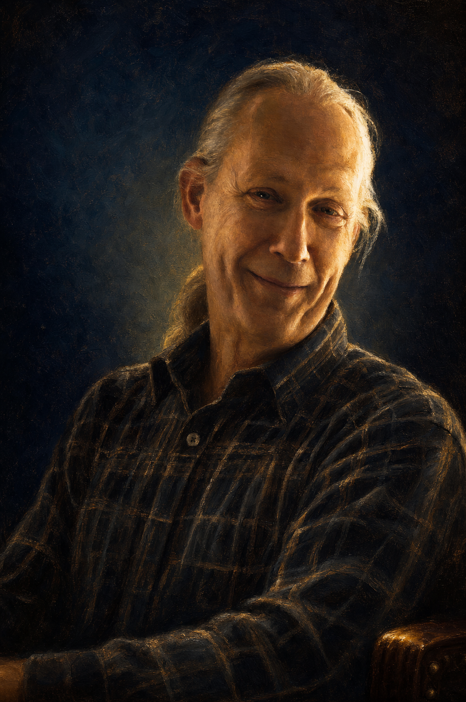

Een rol voor de zwaarste instrumenten
De nar speelt zijn cruciale rol bij het HDD-traject en de T4Organizations-scan — daar waar de inzet het hoogst is en de waarheid het diepst verborgen zit.
De menselijke laag van het TaPas‑platform
Eén stoel blijft leeg aan de tafel waar het telt. Niet uit gebrek, maar met opzet — voor de enige die straffeloos mag zeggen wat niemand hoort.
Treed binnenWaarom de nar werkt waar anderen falen
Het platform meet uitzonderlijk goed. Talent, energie, drivers, teamgezondheid, de kloof tussen woord en daad — alles wordt zichtbaar. Maar tussen meten en handelen gaapt een gat dat geen instrument dicht: niemand durft de ongemakkelijke conclusie hardop uit te spreken aan de tafel waar het telt.
Cognitieve bias kleurt elk cijfer. Blinde vlekken verbergen precies wat het rapport blootlegt. Groepsdynamica smoort de scherpe vraag. En een interne medewerker kán de waarheid vaak niet benoemen — hij wordt betaald door wie hij zou moeten tegenspreken.
De hofnar bezat één ding dat niemand anders bezat: de narrenvrijheid — een erkend recht om de waarheid te spreken zonder represaille. Geen brutaliteit, maar een rol met spelregels. De Jester krijgt dat recht formeel toegekend. En de lichtheid is geen versiering: het is het mechanisme dat de waarheid laat landen in plaats van afgeweerd te worden.
De definitie
Een TaPas Jester is een door de organisatie gemandateerde buitenstaander die, gewapend met de wetenschappelijke instrumenten van het platform, de onbespreekbare waarheid puntscherp, respectvol en met lichtheid benoemt — zonder ooit zelf eigenaar van het besluit te zijn.
De scherpte is geen aanmatiging maar een vooraf toegekend recht.
Onafhankelijk, niet verstrengeld, niet afhankelijk van wie hij tegenspreekt.
De zotskap zit op een wetenschappelijk hoofd. Elke uitspraak rust op data.
De waarheid wordt zó gebracht dat ze landt in plaats van afgeweerd te worden.
De drie wetten van de nar
Lichtheid is een aflevervorm, geen excuus voor oppervlakkigheid. Elke scherpte is onderbouwd door het platform.
Narren-humor richt zich op de machtigste in de kamer, niet op de zwakste. De Jester confronteert de top en beschermt de basis.
De Jester maakt scherp; de organisatie beslist en draagt. Hij is nooit verantwoordelijk voor de inhoud van het besluit.
De vijf functies
Boven de vijf functies staat altijd de zotskap zelf: het mandaat en de stijl. Kies een functie — de nar laat zien wat hij doet en waaruit hij put.
De (in)congruentie tussen intentie en daad zien en benoemen; blinde vlekken zichtbaar maken.
Gevoed door T4O-gap · HDD-synthese
De hoogste onderscheiding
De Jester is geen functie die je kiest, maar een mandaat dat je verdient. Het is de zwaarste rol binnen het TaPas-vak — en daarom de meest begeerde. Alleen wie de instrumenten ten volle beheerst én de lichtheid bezit om de waarheid te laten landen, mag de zotskap dragen.
De nar speelt zijn cruciale rol bij het HDD-traject en de T4Organizations-scan — daar waar de inzet het hoogst is en de waarheid het diepst verborgen zit.
Wie met deze instrumenten wil werken, bouwt eerst de TaPas Jester-accreditatie op: bewezen meesterschap, geleefde integriteit en de stijl om scherp én licht te zijn.
Toetreden tot de nar is de hoogste onderscheiding die een TaPas-expert kan verdienen. Geen rang die je koopt — een plek die je verdient.
De weg loopt langs de instrumenten: van eerste bekwaming, over begeleide trajecten, tot het moment waarop de zittende Jesters je het mandaat toevertrouwen.
De narrenkamer
Aan de wand van de narrenkamer hangen zij die het mandaat dragen. De eerste vier TaPas Jesters — benoemd, niet gekozen.


Er is plaats voor meer doeken. Wie bekwaam genoeg wordt, hangt op een dag mee.
Het Jester-traject
De zegening van de nar
Een korte sessie met de opdrachtgever. Het mandaat wordt expliciet toegekend en ondertekend. De instrumenten worden uitgezet — het HDD-traject en T4Organizations lopen, individuele profielen waar relevant.
Hier krijgt de nar zijn vrijheid.
De feiten worden verzameld
De instrumenten doen hun werk. De Jester legt de feiten náást elkaar en zoekt de gaps: waar zegt de organisatie A en doet ze B? Waar zit de blinde vlek? Waar ligt het team in de knoop?
Nog geen oordeel — enkel zien.
De scherpe synthese
De kern van het hele onderdeel. Niet een rapport-dat-blijft-liggen, maar een ervaring: de organisatie hoort wat ze niet wilde horen, en kan erom lachen omdat ze het herkent. De Jester doorprikt de illusies — zoals de illusie dat er "juiste" beslissingen bestaan.
Daarna stopt de nar. De beslissing zelf neemt de organisatie.
Het levende document
De narrenvrijheid bestaat alleen als ze uitdrukkelijk gegeven is. Dit charter is tegelijk merkverhaal én risicobeheersing — het maakt van scherpe feedback een afgesproken spel met regels.
tussen de opdrachtgever en de Jester
De Jester mag, voor de duur van het traject, elk thema benoemen — zonder represaille of opdrachtbeëindiging tot gevolg.
Uiterste discretie, geen persoonlijke aanvallen — de nar steekt omhoog, nooit omlaag. Respect als grondhouding.
De Jester is nooit eigenaar van het besluit en draagt geen inhoudelijke verantwoordelijkheid.
De opdrachtgever verbindt zich ertoe écht te luisteren; de Jester verbindt zich ertoe écht te onderbouwen.
Het mandaat is verzegeld. De nar mag spreken.
De positionering, in één zin
De eerste wetenschappelijk gevoede business nar — die met uitdrukkelijk mandaat zegt wat uw organisatie niet wil horen, en het zó zegt dat u erom lacht en er toch naar handelt.